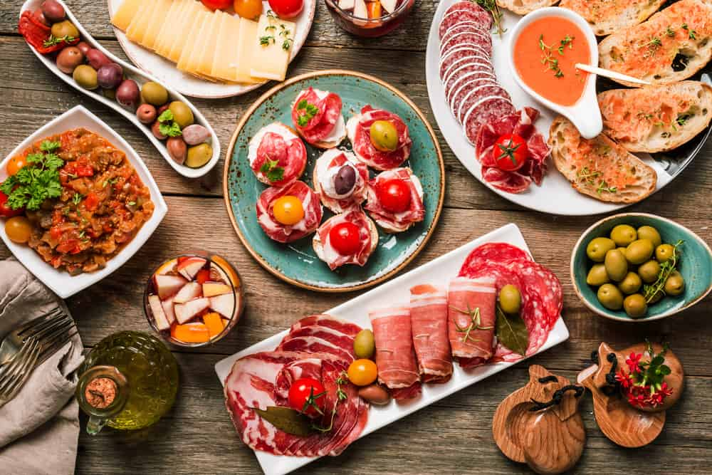
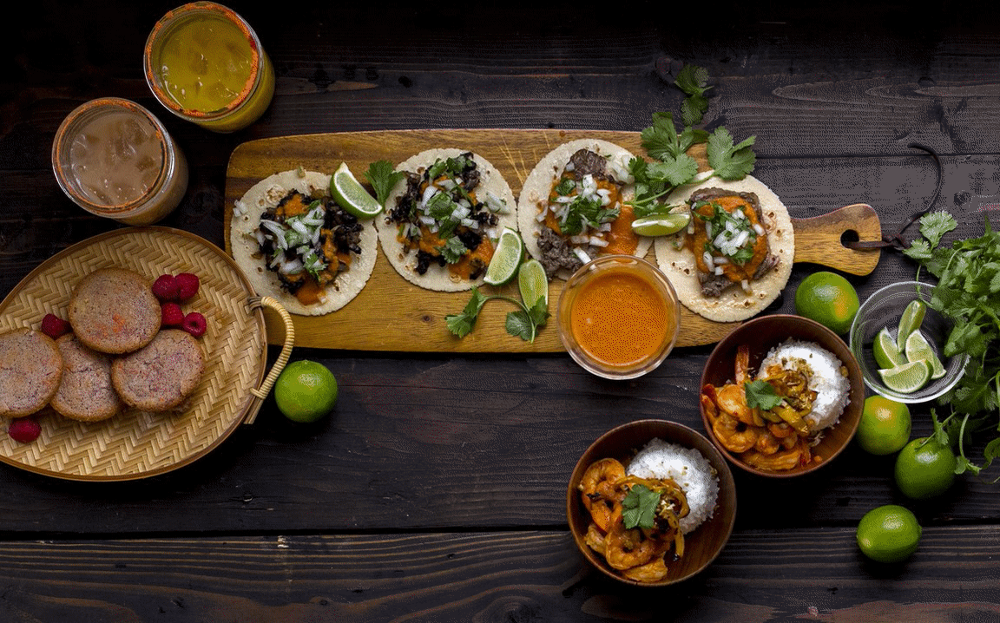
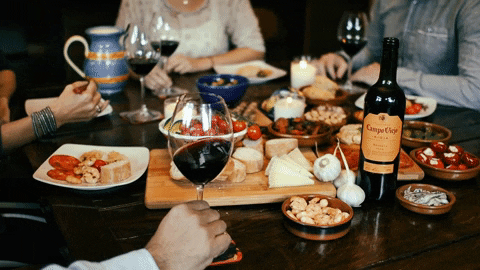
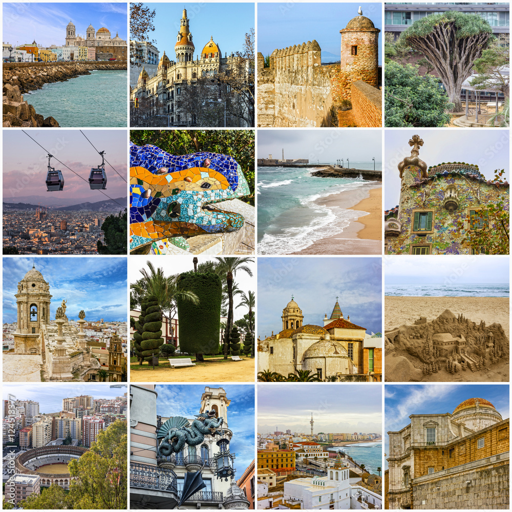
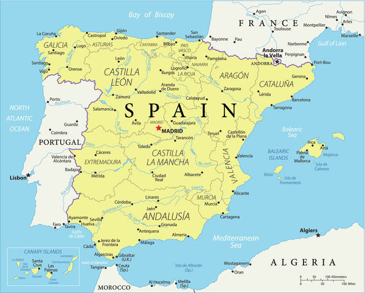
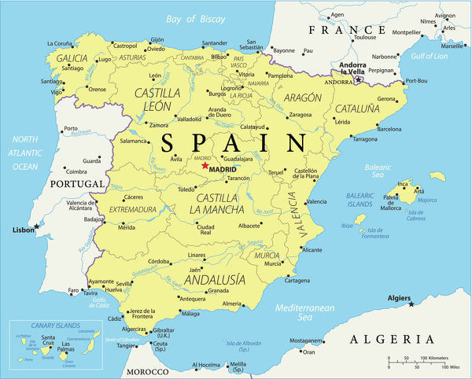
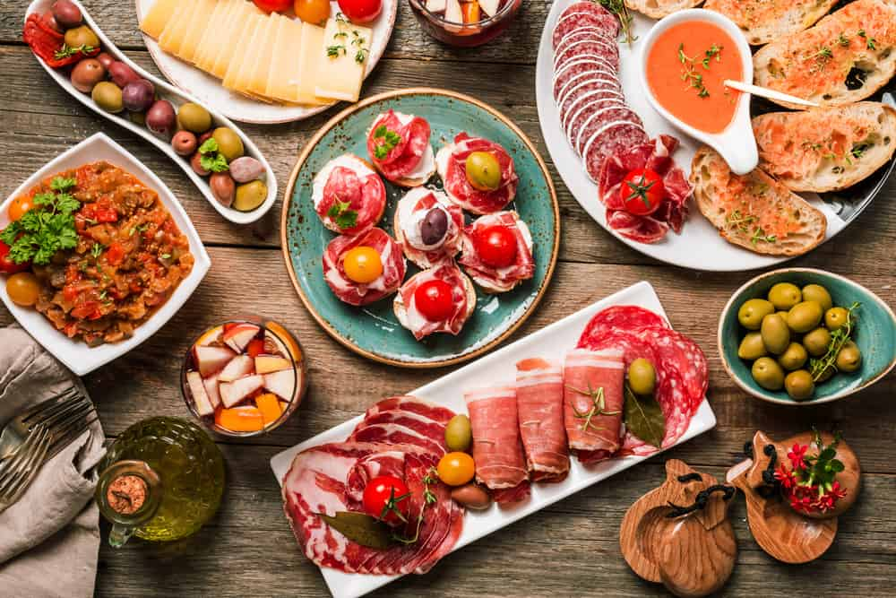
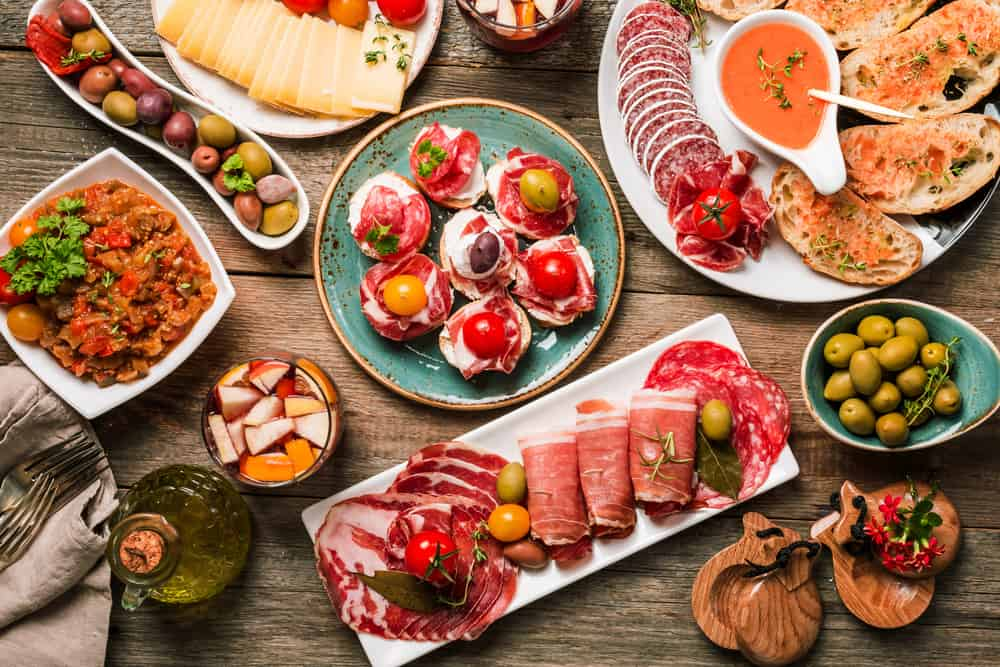

Phew! I'm glad we landed safely. Welcome to Spain, the largest country in Southern Europe, mostly situated on the Iberian Peninsula. It includes everything from beautiful cathedrals, world-class art, delicious food, fantastic beaches and lively nightlife. A variety of historical influences shape the culture of Spain, primarily the ancient Romans, the Celtics, the Phoenicians of the eastern Mediterranean, the Carthaginians and the Visigoths. Spanish art, architecture, music, and cuisine have been shaped by the country's Mediterranean climate and geography.
Speaking of cuisine, have you seen this new restaurant that opened up?
Can Majó
Almirall Aixada 23, 08003 Barcelona Spain... The freshest, most exotic Catalan coast seafood daily, known for its legendary, delicious paella!
Click here for the menu and here for Tripadvisor.
I don't know about you, but I'm absolutely starving! Let's go to the restaurant!

Yum! During my trip to Spain, the food was a really memorable part of my experience there. The cuisine in this country is influenced by its geography, climate, and the many different cultures that have crossed and settled in Spain throughout its history. Their cuisine is abundant, unique, and tasty. Spanish cuisine contains many fresh fruits and vegetables, bread, nuts, garlic, red meat, pork, and herbs. Because of its Mediterranean roots, Spanish cuisine also contains a wide variety of seafood from the Atlantic Ocean and the Mediterranean Sea that surround the country. Spain is the world's largest producer of olive oil, and it is widely used in many foods and sauces. One of Spain's best known foods is paella, this restaurant's signature dish.


Paella is commonly viewed as Spain's national dish and one of its identifying symbols. It is a classic rice dish made with the following ingredients:
Rice
Chicken
Saffron
Tomato
Shrimp/Prawn
Chorizo
Garlic
Onion
Mussel
Paprika
Olive Oil
What's your favourite food?

I believe this concludes our visit to Spain. Click here to fly back to the airport.

.png) 

 
